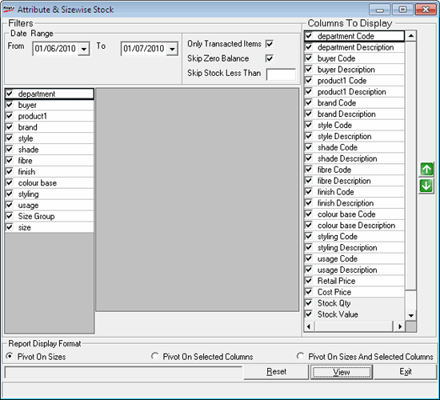
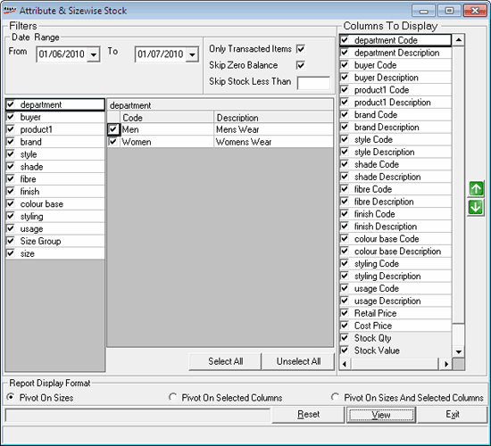

The Attribute and Size wise Stock Report displays the stock details of quantity and value for the selected attributes in a size-wise grid format for a selected period. This report can be generated on the basis of three parameters: Size wise, selected columns (attributes) and on a combination of size and selected columns (attributes).
How to reach: Reports > Stock > Attribute + Size wise
The Attribute & Sizewise Stock Balance Report window is displayed.

Filters
Date Range: Select the From and To dates for which the report is to be generated. By default, the From and To dates are the current Shoper date. You can enter any date range but the To date cannot be greater than the Shoper date.
Only Transacted Item: Displays the transacted items only.
Skip Zero Balance: Select to skip items with zero balance.
Skip Stock Less than: Enter a value to skip items less than the entered quantity.

Department/ Buyer/ Product/ Brand/ Style/ Shade/ Fibre/ Finish/ Colour Base/ Styling/ Size Group/ Size: By default, all filter attributes are selected. By clicking on the selected attribute, its code and descriptions details are displayed. You can deselect any of the code/description and proceed in the similar manner. Selection is applied in the hierarchy, Department/ Buyer/ Product/ Brand/ Style/ Shade/ Fibre/ Finish/ Colour Base/ Styling/ Size Group/ Size. That is, when you select a department, all buyer details for the department are available for selection. You can deselect buyer(s) to generate the report as per your requirements.
Select All: To select all codes and descriptions for a selected attribute.
Unselect All: To deselect all codes and descriptions for a selected attribute.
Note: The filter listed in the report is based on the selections of item classifications made under Item Classification under Categories in System Parameters.
Columns to Display: This filter shows the codes and descriptions columns for the attributes for selection. All columns are selected by default. You can deselect columns as per your requirements. Use the Up and Down arrows to arrange the columns in the report. By default, the position of the Stock Qty, Stock Value, Current Stock Qty and Current Stock Value columns are kept as the last columns and cannot be re-arranged.
Report Display Format
Pivot on Sizes: The report generated provides information on Stock for each item size along with the total Stock in terms of Qty and Value. This option is selected by default.
Pivot on Selected Columns: The report displays the stock qty and stock value based on columns selected along with the size information.
Pivot on Sizes and Selected Columns: This is a combined report which displays the stock information (Qty and Value) on the bases of columns selected, the individual sizes and the totals for all sizes.